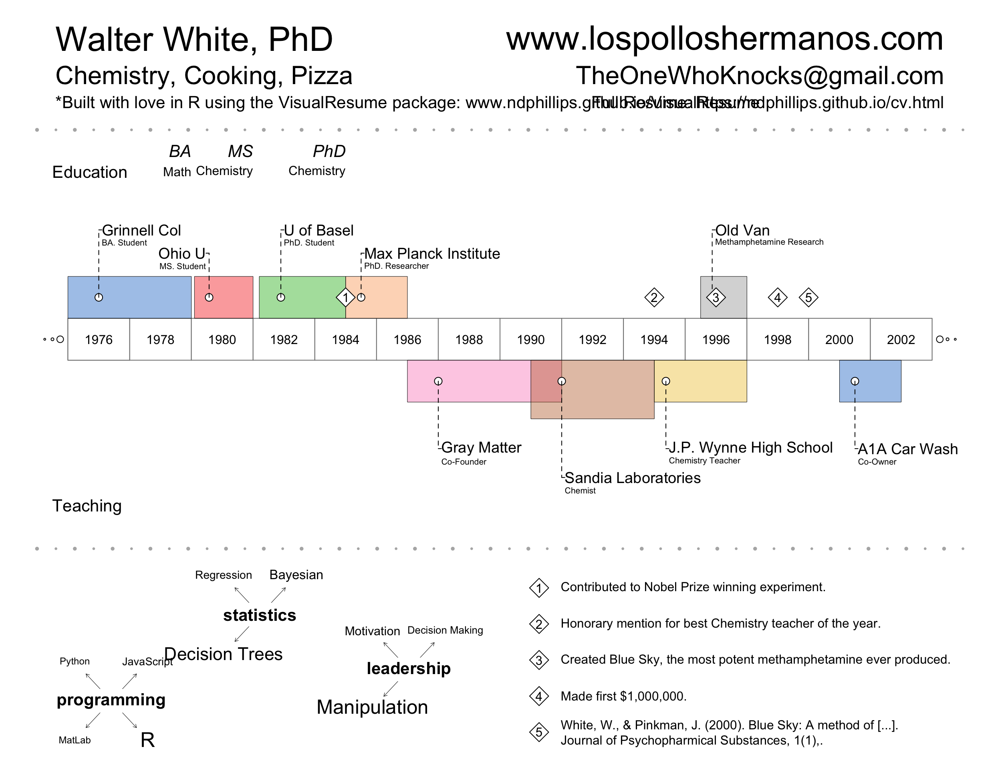

The VisualResume package contains the VisualResume.R function which produces a Visual resume like the one below:
VisualResume::VisualResume(
titles.left = c("Nathaniel D. Phillips, PhD.", "R, Data, and Decision Science", "*Built with love in R using the InfoResume package (www.ndphillips.github.io"),
titles.right = c("www.nathanieldphillips.com", "Nathaniel.D.Phillips.is@gmail.com", "Full Resume Link: www.ndphillips.github.io/cv"),
center.labels = c("Education & Research", "Teaching & Work"),
top = data.frame(title = c("Grinnell College", "Ohio U", "U of Basel", "MPIB", "U of Konstanz", "U of Basel"),
sub = c("BA. Student", "MS. Student", "PhD. Student", "PhD. Researcher", "PostDoc", "PostDoc"),
start = c(2001.5, 2006.5, 2011, 2012, 2014.7, 2016.1),
end = c(2005.5, 2010.9, 2014.5, 2014.6, 2016, 2017)),
bottom = data.frame(title = c("Musician's Friend", "Statistics", "Research Methods", "Information Search", "R", "R", "R", "R"),
sub = c("Statistician", "Ohio U", "Ohio U", "Konstanz", "Konstanz", "Konstanz", "Basel", "Basel"),
start = c(2005.5, 2009.5, 2010, 2014.8, 2014.8, 2015.4, 2016.1, 2016.7),
end = c(2006.5, 2010, 2011, 2015.3, 2015.3, 2015.9, 2016.6, 2017)),
milestones = data.frame(title = c("BA Math", "MS Psych", "Ph.D Psych"),
subtitle = c("2005", "2010", "2014"),
date = c(2005.5, 2010.9, 2014.5)),
events = data.frame(year = c(2016, 2015, 2014, 2013, 2012),
title = c("Phillips (in prep). YaRrr! The Pirate's Guide to R. Self-published e-book.",
"Hintze et al. (2015). The Janus face of Darwinian competition.\nScientific Reports, 5.",
"Phillips et al. (2014). Rivals in the Dark: How competition influences [...].\nCognition, 113(1), 104-119.",
"Gonzalez-Vallejo et al. (2013). Early positive information impacts final [...].\nJournal of Behavioral Decision Making, 27.",
"Gonzalez-Vallejo & Phillips, N. D. (2012). Predicting soccer matches [...].\nJudgment and Decision Making. 5(3). 200-206.")),
interests = list("Programming" = c(rep("R", 20), rep("Python", 1), rep("JavaScript", 2), "MatLab", "asdf"),
"Statistics" = c(rep("Trees", 10), rep("Bayesian", 5), rep("Regression", 3)),
"Research" = c(rep("Search", 10), rep("Dec Making", 5), rep("Reasoning", 3)))
)
You can install VisualResume from GitHub as follows:
#install.packages("devtools") # Only if you don't have the devtools package
devtools::install_github("ndphillips/VisualResume")